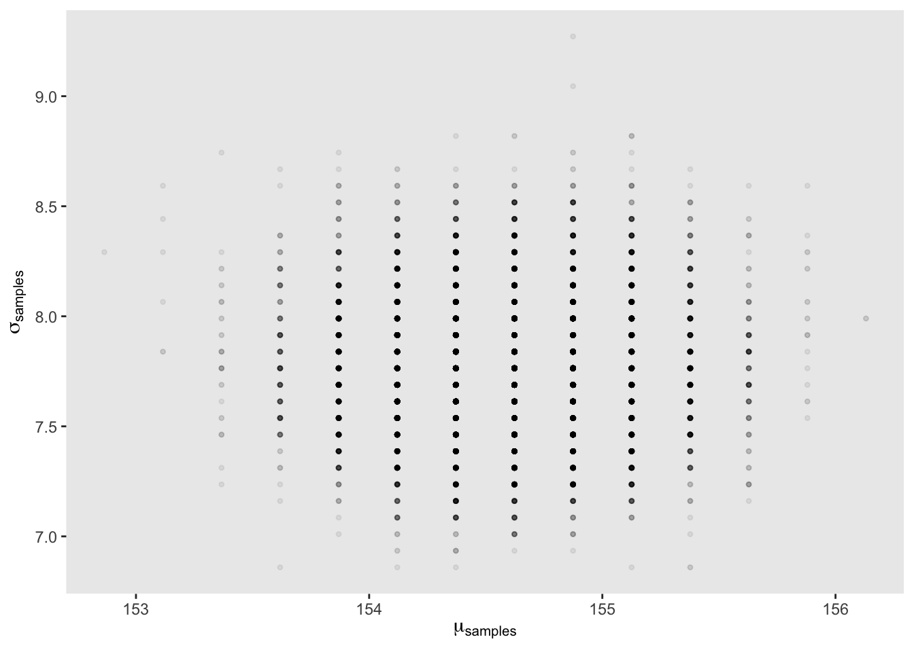
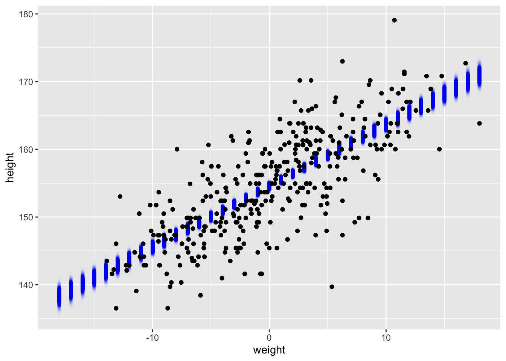

!khun


n <- 200
d_grid <-
# we'll accomplish with `tidyr::crossing()` what McElreath did with base R `expand.grid()`
crossing(mu = seq(from = 130, to = 180, length.out = n),
sigma = seq(from = 0, to = 15, length.out = n))
grid_function <- function(mu, sigma) {
dnorm(kHeight_adult$height, mean = mu, sd = sigma, log = T) %>%
sum()
}
d_grid <-
d_grid %>%
mutate(log_likelihood = map2(mu, sigma, grid_function)) %>%
unnest(log_likelihood) %>%
mutate(prior_mu = dnorm(mu, mean = 150, sd = 10, log = T),
prior_sigma = dunif(sigma, min = 0, max = 10, log = T),
product = log_likelihood + prior_mu + prior_sigma,
probability = exp(product- max(product)),
prior_product = prior_mu + prior_sigma,
prior_probability = exp(prior_product - max(prior_product)))
prior_grid <-
tibble(prior_mu = log(rnorm(1e5, mean = 150, sd = 10)),
prior_sigma = log(runif(1e5, min = 0, max = 10))) %>%
mutate(product = prior_mu + prior_sigma,
probability = exp(product - max(product)))
prior_plot <- ggplot(data = d_grid) +
geom_point(aes(x = mu, y = sigma, color = prior_probability), alpha = .1) +
theme(panel.grid = element_blank()) +
scale_color_viridis_c(name = "Prior Probability", option = "A") +
labs(title = "Prior")
posterior_plot <- ggplot(data = d_grid) +
geom_point(aes(x = mu, y = sigma, color = probability), alpha = .5) +
theme(panel.grid = element_blank()) +
scale_color_viridis_c(name = "Posterior Probability", option = "A") +
labs(title = "Posterior")
prior_plot + posterior_plot + plot_layout(guides = "collect")ggplot(d_grid) +
geom_point(aes(x = mu, y = sigma, color = "Prior", alpha = prior_probability)) +
geom_point(aes(x = mu, y = sigma, color = "Posterior", alpha = probability)) +
scale_color_manual(values = c("Prior" = "blue", "Posterior" = "red")) +
scale_alpha(name = "Normalized Likelihood", range = c(0, 0.6)) +
labs(title = "Prior vs Posterior", color = "Distribution") +
theme_minimal()
d_grid_samples <-
d_grid %>%
sample_n(size = 1e4, replace = T, weight = probability)
d_grid_samples %>%
ggplot(aes(x = mu, y = sigma)) +
geom_point(size = 0.9, alpha = 1/15) +
scale_fill_viridis_c() +
labs(x = expression(mu[samples]),
y = expression(sigma[samples])) +
theme(panel.grid = element_blank())
b4.1 <-
brm(data = kHeight_adult,
family = gaussian,
height ~ 1,
prior = c(prior(normal(178, 20), class = Intercept),
prior(uniform(0, 50), class = sigma, ub = 50)),
iter = 2000, warmup = 1000, chains = 4, cores = 4,
backend = "cmdstanr", seed = 4, file = "fits/b04.011")
plot(b4.1) Loading required package: rstanLoading required package: StanHeaders
rstan version 2.32.7 (Stan version 2.32.2)For execution on a local, multicore CPU with excess RAM we recommend calling
options(mc.cores = parallel::detectCores()).
To avoid recompilation of unchanged Stan programs, we recommend calling
rstan_options(auto_write = TRUE)
For within-chain threading using `reduce_sum()` or `map_rect()` Stan functions,
change `threads_per_chain` option:
rstan_options(threads_per_chain = 1)
Attaching package: 'rstan'The following object is masked from 'package:tidyr':
extractThe following objects are masked from 'package:posterior':
ess_bulk, ess_tailb4.2 <-
brm(data = kHeight_adult, family = gaussian,
height ~ 1,
prior = c(prior(normal(150, 2), class = Intercept),
prior(uniform(0, 6), class = sigma, lb = 0, ub = 6)),
iter = 2000, warmup = 1000, chains = 4, cores = 4,
seed = 4, backend = "cmdstanr", silent = 2,
file = "fits/b04.02.6")
plot(b4.2)
b4.2_draws <- as_draws_df(b4.2)
b4.2_draws <- b4.2_draws %>%
mutate(prior_mu = rnorm(n(), 150, 2),
prior_sigma = runif(n(), 0, 6))
ggplot(b4.2_draws, ) +
geom_point(aes(x = b_Intercept, y = sigma), alpha = 0.05, color = "blue") +
geom_density_2d(aes(x = b_Intercept, y = sigma), color = "blue", bins = 5) +
geom_point(aes(x = prior_mu, y = prior_sigma), alpha = 0.05, color = "red") +
geom_density_2d(aes(x = prior_mu, y = prior_sigma), color = "red", bins = 5) +
labs(x = expression(mu), y = expression(sigma),
title = "Posterior Contours of mu and sigma") +
theme_minimal()
kHeight_adult <-
kHeight_adult %>%
mutate(weight_c = weight - mean(weight))
b4.3 <-
brm(data = kHeight_adult,
family = gaussian,
height ~ 1 + weight_c,
prior = c(prior(normal(178, 100), class = Intercept),
prior(normal(0, 10), class = b),
prior(uniform(0, 50), class = sigma, ub = 50)),
iter = 2000, warmup = 1000, chains = 4, cores = 4,
seed = 4, backend = "cmdstanr", silent = 2,
file = "fits/b04.03.2")
as_draws_df(b4.3) %>%
select(b_Intercept:sigma) %>%
cor() %>%
round(digits = 2)Warning: Dropping 'draws_df' class as required metadata was removed. b_Intercept b_weight_c sigma
b_Intercept 1.00 -0.04 0.02
b_weight_c -0.04 1.00 0.01
sigma 0.02 0.01 1.00pairs(b4.3)
mu <- fitted(b4.3, summary = F)
# new data
weight_seq <- tibble(weight_c = seq(from = -18, to = 18, by = 1))
mu <-
fitted(b4.3,
summary = F,
newdata = weight_seq) %>%
as_tibble() %>%
# here we name the columns after the `weight` values from which they were computed
set_names(-18:18) %>%
mutate(iter = 1:n())Warning: The `x` argument of `as_tibble.matrix()` must have unique column names if
`.name_repair` is omitted as of tibble 2.0.0.
ℹ Using compatibility `.name_repair`.mu <- mu %>%
gather(weight, height, -iter) %>%
# we might reformat `weight` to numerals
mutate(weight = as.numeric(weight))
ggplot()+
geom_point(data = mu, aes(x = weight, y = height), alpha = .002, color = "blue")+
geom_point(data = kHeight_adult, aes(x = weight_c, y = height))
pred_height <-
predict(b4.3,
newdata = weight_seq) %>%
as_tibble() %>%
bind_cols(weight_seq)
pred_height %>%
slice(1:6)# A tibble: 6 × 5
Estimate Est.Error Q2.5 Q97.5 weight_c
<dbl> <dbl> <dbl> <dbl> <dbl>
1 138. 5.21 128. 148. -18
2 139. 5.14 129. 149. -17
3 140. 5.19 130. 150. -16
4 141. 5.13 131. 151. -15
5 142. 5.27 132. 152. -14
6 143. 5.00 133. 153. -13kHeight <-
kHeight %>%
mutate(weight_s = (weight - mean(weight)) / sd(weight))
b4.5 <-
brm(data = kHeight,
family = gaussian,
height ~ 1 + weight_s + I(weight_s^2),
prior = c(prior(normal(178, 100), class = Intercept),
prior(normal(0, 10), class = b),
prior(uniform(0, 50), class = sigma, ub = 50)),
iter = 2000, warmup = 1000, chains = 4, cores = 4,
backend = "cmdstanr", silent = 2, seed = 4,
file = "fits/b04.05.1.1")
weight_seq <- tibble(weight_s = seq(from = min(kHeight$weight_s) - (0.5 * sd(kHeight$weight_s)),
to = max(kHeight$weight_s) + (0.5 * sd(kHeight$weight_s)),
length.out = 30))
f <-
fitted(b4.5,
newdata = weight_seq) %>%
as_tibble() %>%
bind_cols(weight_seq)
p <-
predict(b4.5,
newdata = weight_seq) %>%
as_tibble() %>%
bind_cols(weight_seq)
ggplot(data = kHeight,
aes(x = weight_s)) +
geom_ribbon(data = p,
aes(ymin = Q2.5, ymax = Q97.5),
fill = "grey83") +
geom_smooth(data = f,
aes(y = Estimate, ymin = Q2.5, ymax = Q97.5),
stat = "identity",
fill = "grey70", color = "black", alpha = 1, linewidth = 1/2) +
geom_point(aes(y = height),
color = "navyblue", shape = 1, size = 1.5, alpha = 1/3) +
coord_cartesian(xlim = range(kHeight$weight_s)) +
theme(text = element_text(family = "Times"),
panel.grid = element_blank())
b4.6 <-
brm(data = kHeight,
family = gaussian,
height ~ 1 + weight_s + I(weight_s^2) + I(weight_s^3),
prior = c(prior(normal(178, 100), class = Intercept),
prior(normal(0, 10), class = b),
prior(uniform(0, 50), class = sigma, ub = 50)),
iter = 2000, warmup = 1000, chains = 4, cores = 4,
backend = "cmdstanr", silent = 2,
seed = 4,
file = "fits/b04.06")
# can't remember why I fit this model, I don't remember it being in the book
b4.7 <-
brm(data = kHeight,
family = gaussian,
height ~ 1 + weight_s,
prior = c(prior(normal(178, 100), class = Intercept),
prior(normal(0, 10), class = b),
prior(uniform(0, 50), class = sigma, ub = 50)),
iter = 2000, warmup = 1000, chains = 4, cores = 4,
backend = "cmdstanr", silent = 2,
seed = 4,
file = "fits/b04.07")
f <-
fitted(b4.6,
newdata = weight_seq) %>%
as_tibble() %>%
bind_cols(weight_seq)
p <-
predict(b4.6,
newdata = weight_seq) %>%
as_tibble() %>%
bind_cols(weight_seq) at <- c(-2, -1, 0, 1, 2)
ggplot(data = kHeight,
aes(x = weight_s)) +
geom_ribbon(data = p,
aes(ymin = Q2.5, ymax = Q97.5),
fill = "grey83") +
geom_smooth(data = f,
aes(y = Estimate, ymin = Q2.5, ymax = Q97.5),
stat = "identity",
fill = "grey70", color = "black", alpha = 1, linewidth = 1/4) +
geom_point(aes(y = height),
color = "navyblue", shape = 1, size = 1.5, alpha = 1/3) +
coord_cartesian(xlim = range(kHeight$weight_s)) +
theme_minimal()+
# here it is!
scale_x_continuous("standardized weight converted back",
breaks = at,
labels = round(at * sd(kHeight$weight) + mean(kHeight$weight), 1))
library(rethinking)rethinking (Version 2.42)
Attaching package: 'rethinking'The following objects are masked from 'package:rstan':
stan, traceplotThe following object is masked from 'package:purrr':
mapThe following objects are masked from 'package:brms':
LOO, stancode, WAICThe following object is masked from 'package:stats':
rstudentggplot(data = cherry, aes(x = year, y = temp))+geom_line()+labs(title = "Cherry Blossom temperature in March)")Warning: Removed 73 rows containing missing values or values outside the scale range
(`geom_line()`).
cherry2 <- cherry %>%
filter(!is.na(temp))
num_knots <- 15
knot_list <- quantile( cherry2$year, probs=seq(0,1,length.out=num_knots) )
B <- bs(cherry2$year,
knots=knot_list[-c(1,num_knots)] ,
degree=4 , intercept=TRUE )
B_tib <- as_tibble(B)
B_tib_join <- cbind(cherry2, B_tib)
B_tib_join_long <- B_tib_join %>%
pivot_longer(cols = c(`1`, `2`,`3`, `4`,`5`, `6`,`7`, `8`,`9`, `10`,`11`, `12`,`13`, `14`, `15`, `16`, `17`),
names_to = "knot",
values_to = "density")
ggplot(data = B_tib_join_long, aes(x = year, y = (density), color = as.factor(knot)))+geom_line()Don't know how to automatically pick scale for object of type
<bs/basis/matrix>. Defaulting to continuous.
b4_smooth <- brm(
data = cherry2,
family = gaussian,
formula = temp ~ 1 + s(year, bs = "bs", k = 30), # k sets number of basis functions
prior = c(
prior(normal(6, 10), class = Intercept),
prior(normal(0, 1), class = b),
prior(student_t(3, 0, 1), class = sds), # Prior for smooth term
prior(exponential(1), class = sigma)
),
backend = "cmdstanr", silent = 2,
iter = 2000,
warmup = 1000,
chains = 4,
cores = 4,
seed = 42,
control = list(adapt_delta = 0.99),
file = "fits/b04.cherry_bspline"
)
b4.1_smooth <- brm(
data = cherry2,
family = gaussian,
formula = temp ~ 1 + s(year, bs = "tp"), # k sets number of basis functions
prior = c(
prior(normal(6, 10), class = Intercept),
prior(normal(0, 1), class = b),
prior(student_t(3, 0, 1), class = sds), # Prior for smooth term
prior(exponential(1), class = sigma)
),
backend = "cmdstanr", silent = 2,
iter = 2000,
warmup = 1000,
chains = 4,
cores = 4,
seed = 42,
control = list(adapt_delta = 0.99),
file = "fits/b04.cherry_thinSpline"
)
year_seq <- tibble(year = seq(from = 800, to = 2000, by = 10))
mu_temp_4 <-
fitted(b4_smooth,
newdata = year_seq) %>%
as_tibble() %>%
# let's tack on the `weight` values from `weight_seq`
bind_cols(year_seq)
pred_temp_4 <-
predict(b4_smooth,
newdata = year_seq) %>%
as_tibble() %>%
bind_cols(year_seq)
# pred_temp_4 %>%
# slice(1:6)
mu_temp_4.1 <-
fitted(b4.1_smooth,
newdata = year_seq) %>%
as_tibble() %>%
# let's tack on the `weight` values from `weight_seq`
bind_cols(year_seq)
pred_temp_4.1 <-
predict(b4.1_smooth,
newdata = year_seq) %>%
as_tibble() %>%
bind_cols(year_seq)
# pred_temp_4.1 %>%
# slice(1:6)cherry2 %>%
ggplot(aes(x = year)) +
geom_ribbon(data = pred_temp_4,
aes(ymin = Q2.5, ymax = Q97.5),
fill = "grey83") +
geom_smooth(data = mu_temp_4,
aes(y = Estimate, ymin = Q2.5, ymax = Q97.5),
stat = "identity",
fill = "grey70", color = "black", alpha = 1, linewidth = 1/2) +
geom_point(aes(y = temp),
color = "navyblue", shape = 1, size = 1.5, alpha = 2/3) +
ylab("temp") +
labs(title = "15 knot B-splines")
cherry2 %>%
ggplot(aes(x = year)) +
geom_ribbon(data = pred_temp_4.1,
aes(ymin = Q2.5, ymax = Q97.5),
fill = "grey83") +
geom_smooth(data = mu_temp_4.1,
aes(y = Estimate, ymin = Q2.5, ymax = Q97.5),
stat = "identity",
fill = "grey70", color = "black", alpha = 1, linewidth = 1/2) +
geom_line(aes(y = temp),
color = "navyblue", shape = 1) +
ylab("temp") +
labs(title = "Thin Plated Spline")Warning in geom_line(aes(y = temp), color = "navyblue", shape = 1): Ignoring
unknown parameters: `shape`
# I am confused as to why the the Thin plated splines don't go more crazy and try to fit all of the contours The weights listed below were recorded in the !Kung census,but heights were not recorded for these individuals. Provide predicted heights and 89% intervals for each of these individuals. That is, fill in the table below, using model-based predictions.
b4.3 <-
brm(data = kHeight,
family = gaussian,
height ~ 1 + weight_s,
prior = c(prior(normal(178, 100), class = Intercept),
prior(normal(0, 10), class = b),
prior(uniform(0, 8), class = sigma, ub = 8)),
iter = 2000, warmup = 1000, chains = 4, cores = 4,
seed = 4, backend = "cmdstanr", silent = 2,
file = "fits/b04.03.2")
b4.8_smooth <- brm(
data = kHeight,
family = gaussian,
formula = height ~ 1 + s(weight_s, bs = "tp"), # k sets number of basis functions
prior = c(
prior(normal(178, 100), class = Intercept),
prior(normal(0, 10), class = b),
prior(student_t(3, 0, 1), class = sds), # Prior for smooth term
prior(exponential(4), class = sigma)
),
backend = "cmdstanr", silent = 2,
iter = 2000,
warmup = 1000,
chains = 4,
cores = 4,
seed = 42,
control = list(adapt_delta = 0.99),
file = "fits/b04.08.1"
)
new_weight_seq <- tibble(weight_c = c(46.95, 43.72, 64.78, 32.59, 54.63) - mean(kHeight$weight))
mu_4.3 <- fitted(b4.3, summary = F)
mu_4.3 <-
fitted(b4.3,
summary = F,
newdata = new_weight_seq) %>%
as_tibble() %>%
set_names(c(46.95, 43.72, 64.78, 32.59, 54.63) - mean(kHeight$weight)) %>%
mutate(iter = 1:n())
mu_4.3 <- mu_4.3 %>%
gather(weight, height, -iter) %>%
# we might reformat `weight` to numerals
mutate(weight = as.numeric(weight))
ggplot()+
geom_point(data = mu_4.3, aes(x = weight, y = height), alpha = .002, color = "blue")+
geom_point(data = kHeight, aes(x = weight_s, y = height))+
coord_cartesian(xlim = range(kHeight$weight))